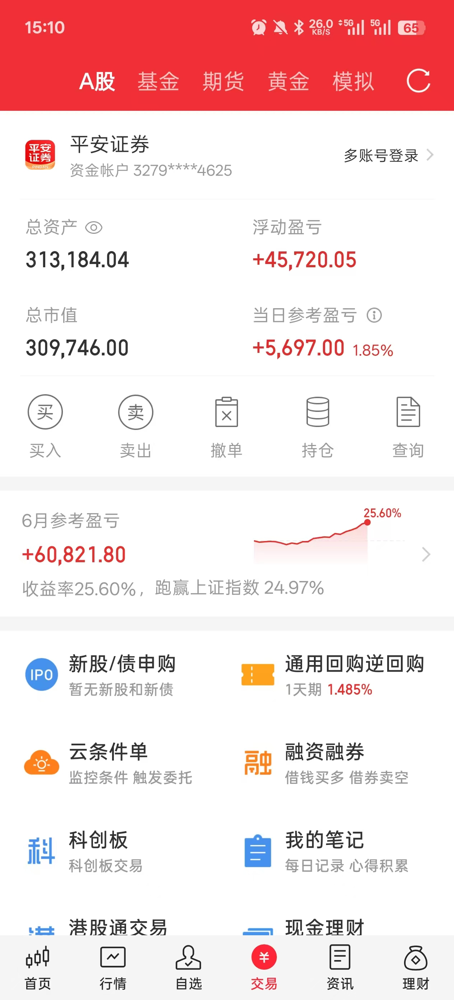
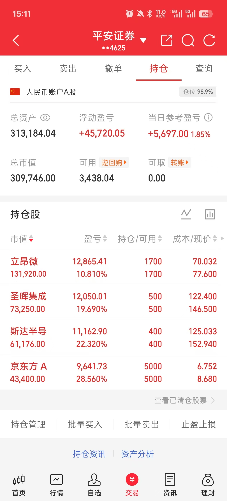
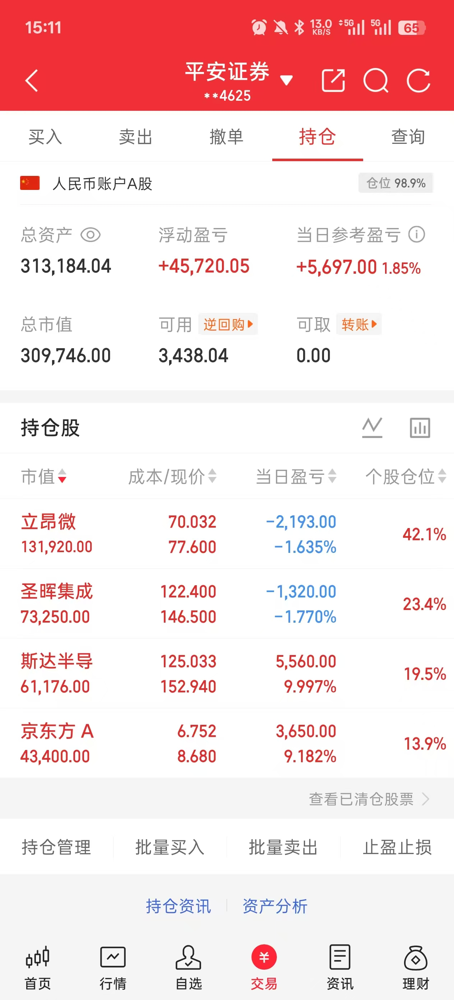

一、大盘概况：科创50站上2200再创历史新高，深创双爆
今日是2026年上半年最后一个交易日。大盘走出极致分化行情：上证指数微红震荡，而深证成指、创业板、科创50全面爆发。科创50大涨3.51%站上2200点整数关口，再创历史新高。两市半日成交2.12万亿，主力资金净流入近400亿，科技赛道全面爆发。
| 指数 | 收盘/午盘 | 涨跌幅 | 特征 |
|---|---|---|---|
| 上证指数 | 4082.13（午盘） | +0.20% | 微红横盘，传统权重拖累 |
| 深证成指 | 午盘 | +2.47% | 科技权重全面爆发 |
| 创业板指 | 午盘 | +3.06% | 成长股全线拉升 |
| 科创50 | 午盘 | +3.51% | 🏆 站上2200点，再创历史新高！ |
| 科创综指 | 午盘 | +3.60% | 全科创板爆发 |
| 北证50 | 午盘 | +3.33% | 小盘科技跟涨 |
| 中证A500 | 午盘 | +1.46% | 中等市值温和上涨 |
昨日（6/29）科创50暴涨4.61%收2126.01创历史新高；今日再接再厉，上午大涨3.51%突破2200点。
两天累计涨幅超8%，从2060区间一路突破2200。这不是反弹，是趋势性突破。
背后逻辑：
① 韩国万亿半导体投资计划持续发酵，半导体设备和材料全线暴涨
② 寒武纪总市值突破1万亿元，成为科创板首只万亿市值个股
③ 立昂微明日（7/1）涨价生效，硅片涨价周期全面确认
④ 半年末机构调仓，资金从高位AI向硬核半导体加速迁移
盘面核心指标（午盘）
| 指标 | 数值 | 解读 |
|---|---|---|
| 上涨家数 | 2700+ | 赚钱效应明显回升 |
| 下跌家数 | 2600+ | 仍有分化，结构性行情 |
| 涨跌比 | 约 1:0.96 | 偏均衡，科技权重拉指数 |
| 涨停家数 | 89（午盘） | 局部热度极高 |
| 跌停家数 | 仅3家 | 恐慌情绪大幅消退 |
| 大盘资金净流入 | +308.72亿（午盘） | 主力资金大举回流！ |
| 半日成交额 | 2.12万亿 | 较昨日缩量4000亿，但承接有力 |
昨日回顾（6月29日）
上证+1.16%收4073.90，科创50暴涨+4.61%收2126.01创历史新高 半导体设备+7.41%、半导体材料+6.94%霸榜 医药全线爆发20+涨停 CPO/PCB概念重挫，资金大规模迁移 主力资金净流出527亿，北向连续流出
今天（6/30）是半年末最后一天。最大的变化是主力资金从净流出逆转为净流入。昨天科创50创新高但主力还在流出，今天主力直接进场扫货——机构半年末结算完毕，开始为下半年布局。科创50从2126跳到2200，两天涨了8%+，这就是"结算压力释放后的回补效应"。
二、板块全景：半导体+军工双主线，科技赛道全面爆发
🔥 涨幅榜
| 板块 | 涨跌幅 | 驱动逻辑 |
|---|---|---|
| 半导体设备 | 大涨 | 韩国万亿投资+国产替代，设备ETF逼近涨停 |
| 半导体材料 | 大涨 | 硅片涨价周期+立昂微明日涨价生效 |
| 先进封装 | 大涨 | Chiplet/3D封装持续火热 |
| 存储芯片 | 大涨 | AI算力需求+涨价周期 |
| 军工 | 掀涨停潮 | 军工板块超10只涨停，资金高低切换 |
| 算力硬件 | 大涨 | 长光华芯20%涨停，算力概念全面回暖 |
| 机器人 | 跟涨 | 科技情绪扩散 |
📉 弱势板块
| 板块 | 表现 | 原因 |
|---|---|---|
| 上证50权重 | 下跌 | 银行、保险、白酒、煤炭集体走弱，资金被科技抽血 |
| 贵金属 | 下跌 | 避险情绪消退，资金流向科技 |
| 化纤/建材 | 下跌 | 传统周期板块失血 |
| 券商 | 震荡 | 未接力，维持十字星 |
涨停板亮点
- 寒武纪：总市值突破1万亿元，科创板首家万亿市值公司。AI芯片龙头地位确立
- 长光华芯：20%涨停，算力硬件概念龙头
- 斯达半导（603290）：涨停152.94元，+10%。IGBT龙头强势封板
- 军工板块：超10只涨停，资金从医药切换至军工（医药昨日20+涨停后今日分化）
- 涨停总数 89只（午盘），集中在半导体、军工、算力三个方向
盘面核心特征：今天是典型的"大票搭台、科技唱戏"格局。
上证50权重（银行/保险/白酒/煤炭）集体走弱拖累上证指数，但科创50和创业板暴涨超3%。
资金在做什么？——从传统蓝筹和高位AI（CPO/PCB）大规模迁移到硬核半导体（设备/材料/封装/存储）。
这不是简单的轮动，这是为下半年布局的战略性调仓。
三、市场情绪与资金面：主力从净流出527亿逆转为净流入400亿
| 指标 | 昨日（6/29） | 今日（6/30午盘） | 变化 |
|---|---|---|---|
| 主力资金 | -527亿 | +308亿 | 🟢 逆转！净流入835亿差额 |
| 涨跌家数 | 2469/2933 | 2700+/2600+ | 🟢 上涨略多 |
| 涨停/跌停 | 124/69 | 89/3 | 🟢 跌停锐减，恐慌消退 |
| 成交额 | 3.5万亿 | 半日2.12万亿 | 缩量但承接有力 |
| 北向资金 | 连续流出 | 待收盘确认 | 关注是否回流 |
四、重要产业动态
| 事件 | 影响 | 影响板块 |
|---|---|---|
| 韩国万亿半导体投资计划持续发酵 | 🟢 全产业链需求确认 | 半导体设备/材料/洁净室 |
| 立昂微子公司明日（7/1）涨价10-15%生效 | 🟢 硅片涨价周期正式落地 | 半导体硅片/材料 |
| 寒武纪总市值突破1万亿 | 🟢 科创板标杆，提振AI芯片信心 | AI芯片/算力 |
| 信越化学/SUMCO二轮硅片提价 | 🟢 海外龙头确认涨价趋势 | 半导体硅片 |
| 美股费城半导体指数涨超3% | 🟢 全球半导体共振 | 半导体全产业链 |
| 军工板块掀涨停潮 | 🟢 资金高低切换+地缘催化 | 军工 |
| 圣晖集成主力两日净买入2.52亿 | 🟢 洁净室龙头获机构认可 | 洁净室工程 |
五、个人持仓分析：斯达半导涨停，京东方逼近涨停，立昂微深V拉回
| 股票 | 持仓 | 成本价 | 收盘价 | 浮动盈亏 | 盈亏比例 | 当日盈亏 | 个股仓位 |
|---|---|---|---|---|---|---|---|
| 立昂微 | 1700股 | 70.032 | 77.600 | +12,865.41 | +10.81% | -2,193.00 | 42.1% |
| 圣晖集成 | 500股 | 122.400 | 146.500 | +12,050.01 | +19.69% | -1,320.00 | 23.4% |
| 斯达半导 | 400股 | 125.033 | 152.940 | +11,162.90 | +22.32% | +5,560.00 | 19.5% |
| 京东方A | 5000股 | 6.752 | 8.680 | +9,641.73 | +28.56% | +3,650.00 | 13.9% |
总资产：313,184.04 元
总市值：309,746.00 元
当日盈亏：+5,697.00 元（+1.85%）
浮动盈亏：+45,720.05 元
仓位：98.9%（几乎满仓）
📈 6月月度收益
跑赢上证指数 24.97%，半导体主线驱动明显。
6月收官，账户实现 +25.60% 的月度收益率，绝对收益 +60,821.80 元。持仓四只股票全部录得正收益，大幅跑赢大盘。
从月度收益曲线来看，整个6月呈现稳步上行态势，月末最后几个交易日随着半导体主线爆发而加速拉升。这验证了"选对方向、拿住仓位"策略的有效性。
📱 实盘截图



逐只分析
1. 斯达半导（603290）— 🏆 涨停+10%，今日最大亮点
- 今日走势：开盘146.03 → 最低砸到137.25 → 下午强势封涨停152.94元！振幅11.3%的超级V反
- 核心催化：功率半导体周期底部+IGBT国产替代+科创50暴涨带动
- 量能：17.5万手，与昨日16.7万手持平，涨停封板量能合理
- 判断：IGBT龙头，今日涨停确立强势地位。从6/25的138到今日153，一周涨11%。功率半导体周期回暖+国产替代逻辑不变。继续持有
2. 京东方A（000725）— 逼近涨停+9.18%
- 今日走势：开盘8.15 → 最高8.75（逼近涨停8.75） → 收盘8.68，全天强势
- 核心催化：玻璃基板封装概念+钙钛矿太阳能电池突破+面板需求回暖
- 量能：5188万手，较昨日4152万手放量25%，成交额292亿位居A股第一
- 资金面：成交额全市场第一，资金大规模涌入。放量涨但量价配合良好
- 判断：面板龙头+新业务催化双重逻辑。趋势极强，继续持有
3. 立昂微（605358）— 深V拉回-1.64%，日内惊心动魄
- 今日走势：开盘77.0 → 最低砸到73.86（-6.4%！） → 下午一路拉回77.60（-1.64%）
- 日内振幅：73.86→78.98，回弹超5元，典型的深V反转
- 量能：90.2万手，较昨日131.8万手缩量32%。昨日天量换手后今日抛压大幅衰减
- 核心逻辑：明日（7/1）子公司涨价10-15%正式生效！今天的深V说明有资金在尾盘抢筹布局明日涨价
- 判断：昨日131万手天量换手，今天缩量深V拉回——抛压接近枯竭，多头开始反击。明天涨价正式生效，是最关键的催化日。坚定持有，涨价逻辑明天才开始兑现
09:30 开77.0 → 10:00 砸到73.86（-6.4%，恐慌低点）
10:30 回到76附近 → 11:30 77左右
14:00 拉到78以上 → 收盘77.60
全天走了个完美的"深V"——早盘恐慌砸盘，下午资金进场拉升。
量能90万手 vs 昨日131万手 = 缩量32% → 砸盘的人少了，接盘的人在进场。
明天7月1日涨价生效，今天尾盘抢筹的资金就是在赌明天。
4. 圣晖集成（603163）— 缩量回调-1.77%，主力未出货
- 今日走势：开盘153 → 冲高157（历史新高！） → 砸到142.5 → 拉回146.50
- 日内振幅：142.5→157，振幅近10%，多空激烈博弈
- 量能：7.75万手，与昨日8.5万手持平。不是放量砸盘，量稳住了
- 主力动向：6/26和6/29两个涨停板，主力净买入合计2.52亿。今日缩量回调，主力跑不掉
- 基本面：在手订单25亿+（+46%），2026年机构预测净利+57%，印尼2.23亿大单刚签
- 判断：3连板后正常回调，量没放大、主力没跑、基本面强劲。获利盘在有序消化，不是恐慌出货。继续持有
核心认知：今天四只持仓走出两种形态——
进攻型（斯达半导涨停+京东方+9%）：半导体主线全面爆发，强势股继续强势
蓄力型（立昂微深V拉回+圣晖集成缩量回调）：前期涨幅大的在消化获利盘，但量能健康、主力未出
这不是持仓出了问题，而是同一主线内部的节奏差异。强势的继续冲，涨多的歇一歇。整体方向一致向上。
六、明日关注（7月1日 · 下半年第一个交易日）
| 关注点 | 分析 |
|---|---|
| 🔴 立昂微涨价生效！ | 7月1日子公司涨价10-15%正式生效，是验证"涨价逻辑→股价反应"的关键窗口。关注开盘量和价 |
| 科创50持续性 | 两天涨8%+站上2200，是继续突破还是高位震荡？2200能否站稳？ |
| 主力资金方向 | 今日净流入近400亿，明日能否持续？机构下半年布局方向确认 |
| 圣晖集成企稳 | 3连板后回调第1天，关注是否缩量企稳。量回到5万手以下=调整近尾声 |
| 斯达半导连板？ | 涨停后次日是否连板？IGBT板块热度能否持续？ |
| 北向资金 | 连续流出后，下半年首个交易日是否回流？ |
关键位置
| 股票 | 支撑 | 压力 | 策略 |
|---|---|---|---|
| 立昂微 | 73.86（今日最低） | 85（前高） | 核心持有！明日涨价生效，逻辑兑现窗口 |
| 斯达半导 | 137（今日最低） | 涨停152.94 | 持有，涨停封板质量好，看连板 |
| 京东方A | 8.11（今日最低） | 8.75（涨停价） | 持有，趋势极强 |
| 圣晖集成 | 135（前涨停价） | 157（今日高点） | 持有，缩量回调健康，主力未出 |
七、总结：半年末完美收官，下半年主线已明
今天是2026年上半年最后一个交易日，A股交出了一份令人满意的答卷。
指数层面：科创50连续两日创历史新高（2126→2200），两天涨超8%。深证成指+2.47%，创业板+3.06%。上证微红但无关紧要——钱全在科技方向。
资金层面：最重要的变化——主力资金从昨日净流出527亿逆转为今日净流入近400亿。机构半年末结算完毕，开始为下半年大规模建仓。方向明确：半导体设备>材料>封装>存储。
持仓层面：斯达半导涨停+10%、京东方A+9.18%逼近涨停、立昂微深V拉回-1.64%（明日涨价生效）、圣晖集成缩量回调-1.77%（主力两日净买2.52亿未出货）。四只全线在半导体主线上，两只大涨两只蓄力。
月度收益：6月收官账户收益率 +25.60%，绝对收益 +60,821.80 元，跑赢上证指数 24.97%。四只持仓全部正收益，方向判断完全正确。
产业层面：韩国万亿半导体投资→全球半导体军备竞赛→中国必须跟→设备/材料/洁净室全产业链受益。立昂微明日涨价生效是这个逻辑的第一次业绩兑现。圣晖集成在手订单25亿+是未来1-2年业绩的保障。
你的方向判断完全正确。从5月底坚定看多半导体，到6月最后两天科创50连续创新高——这不是运气，是方向判断的兑现。产业逻辑+国际格局+国产替代三重共振，下半年这个方向只会更强。
明天是7月1日，下半年第一个交易日，也是立昂微涨价正式生效的日子。保持定力，继续持有。